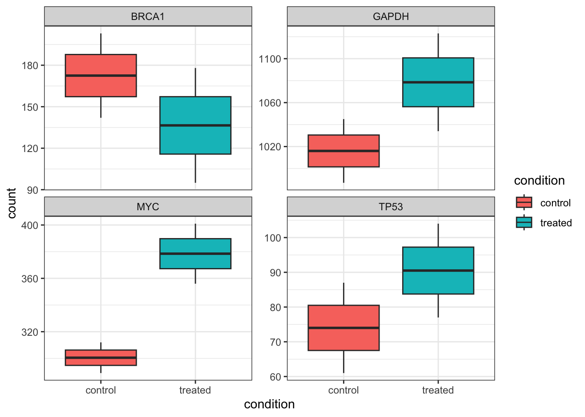

library(tidyverse)Data manipulation for ggplot2
Why format matters
ggplot2 is built around long format data. In long format, each row represents a single observation, and variables are stored in columns. This structure maps naturally onto ggplot2’s aesthetic system: one column per aesthetic (x, y, colour, fill, etc.).
We’ll use gene count data as an example.
A long format table looks like this:
| sample | gene | count |
|---|---|---|
| sample1 | BRCA1 | 142 |
| sample1 | TP53 | 87 |
| sample1 | MYC | 93 |
| sample2 | BRCA1 | 203 |
| sample2 | TP53 | 61 |
| sample2 | MYC | 64 |
Each gene-by-sample combination gets its own row. This makes it straightforward to map gene to colour, sample to the x-axis, and count to the y-axis.
The problem: a lot of data is naturally wide
In contrast, data such as RNA-seq count matrices are typically stored in wide format, where each sample is its own column:
| gene | sample1 | sample2 | sample3 | sample4 |
|---|---|---|---|---|
| BRCA1 | 142 | 203 | 178 | 95 |
| TP53 | 87 | 61 | 104 | 77 |
| MYC | 93 | 64 | 401 | 356 |
This format is convenient for storage and inspection, but ggplot2 cannot directly use it. To plot this data, we need to reshape it from wide to long.
Pivoting with tidyr
The tidyr package (part of the tidyverse) provides two key functions for reshaping data:
pivot_longer(): wide → long (the one we use most)pivot_wider(): long → wide
Creating a small example counts matrix
counts_wide <- data.frame(
gene = c("BRCA1", "TP53", "MYC", "GAPDH"),
sample1 = c(142, 87, 312, 1045),
sample2 = c(203, 61, 289, 987),
sample3 = c(178, 104, 401, 1123),
sample4 = c(95, 77, 356, 1034)
)
counts_wide gene sample1 sample2 sample3 sample4
1 BRCA1 142 203 178 95
2 TP53 87 61 104 77
3 MYC 312 289 401 356
4 GAPDH 1045 987 1123 1034Note: The gene column is a column, not rownames. If you read in your data with the gene names as rownames, you may first need to run
counts_wide <- counts_wide |> rownames_to_column(var = "gene")to move the rownames to a column.
pivot_longer(): wide to long
pivot_longer() collapses multiple columns into two: one for the former column names (here, sample IDs) and one for the values (counts).
counts_long <- counts_wide |>
pivot_longer(
cols = -gene, # collapse all columns except gene
names_to = "sample", # new column for old column names
values_to = "count" # new column for the values
)
counts_long# A tibble: 16 × 3
gene sample count
<chr> <chr> <dbl>
1 BRCA1 sample1 142
2 BRCA1 sample2 203
3 BRCA1 sample3 178
4 BRCA1 sample4 95
5 TP53 sample1 87
6 TP53 sample2 61
7 TP53 sample3 104
8 TP53 sample4 77
9 MYC sample1 312
10 MYC sample2 289
11 MYC sample3 401
12 MYC sample4 356
13 GAPDH sample1 1045
14 GAPDH sample2 987
15 GAPDH sample3 1123
16 GAPDH sample4 1034Now each row is one gene–sample observation – exactly what ggplot2 expects.
pivot_wider(): long back to wide
If you need to go the other direction (e.g., to export a count matrix or join tables), use pivot_wider():
counts_wide_again <- counts_long |>
pivot_wider(
names_from = "sample",
values_from = "count"
)
counts_wide_again# A tibble: 4 × 5
gene sample1 sample2 sample3 sample4
<chr> <dbl> <dbl> <dbl> <dbl>
1 BRCA1 142 203 178 95
2 TP53 87 61 104 77
3 MYC 312 289 401 356
4 GAPDH 1045 987 1123 1034Adding sample metadata
In a real RNA-seq analysis, you’ll also have a metadata table that maps sample IDs to experimental groups (e.g., treatment, timepoint, tissue). After pivoting to long format, you can join metadata in using left_join().
# A simple metadata table
metadata <- data.frame(
sample = c("sample1", "sample2", "sample3", "sample4"),
condition = c("control", "control", "treated", "treated"),
timepoint = c("T0", "T0", "T24", "T24")
)
metadata sample condition timepoint
1 sample1 control T0
2 sample2 control T0
3 sample3 treated T24
4 sample4 treated T24# Join metadata onto the long counts table
counts_annotated <- counts_long |>
left_join(metadata, by = "sample")
counts_annotated# A tibble: 16 × 5
gene sample count condition timepoint
<chr> <chr> <dbl> <chr> <chr>
1 BRCA1 sample1 142 control T0
2 BRCA1 sample2 203 control T0
3 BRCA1 sample3 178 treated T24
4 BRCA1 sample4 95 treated T24
5 TP53 sample1 87 control T0
6 TP53 sample2 61 control T0
7 TP53 sample3 104 treated T24
8 TP53 sample4 77 treated T24
9 MYC sample1 312 control T0
10 MYC sample2 289 control T0
11 MYC sample3 401 treated T24
12 MYC sample4 356 treated T24
13 GAPDH sample1 1045 control T0
14 GAPDH sample2 987 control T0
15 GAPDH sample3 1123 treated T24
16 GAPDH sample4 1034 treated T24 Now each row carries both the count value and the experimental context for that sample – making it easy to map condition or timepoint to a ggplot2 aesthetic.
left_join()
It’s a good idea to use one of the dplyr join() functions here (left_join typically being the most popular) to join the metadata to the counts long object. Left join will keep all observations in the “x” or left dataframe (our counts dataframe) and will automatically repeat values from the “y” dataframe (the metadata) where they match multiple times – this is important here as the same sample ID is repeated multiple times in our counts long object for each unique gene. We use by = "sample" argument as the column that exists in both dataframes and for most biological datasets we can reasonably expect to have metadata recorded by sample.
Handy tip: name the column the same in each dataframe to join it as the code above. If they are named differently (e.g., counts is “sample” and metadata is “samplename”), you can instead write the function as below, where the name on the left corresponds to the column name in the first dataframe and the name on the right corresponds to the column name in the second dataframe:
counts_annotated <- left_join(counts_long, metadata, by = c("sample" = "samplename"))Plotting the result
With the data in long format and metadata attached, we can go straight into ggplot2:
counts_annotated |>
ggplot(aes(x = condition, y = count, fill = condition)) +
geom_boxplot() +
theme_bw() +
facet_wrap( ~ gene, scales = "free_y")